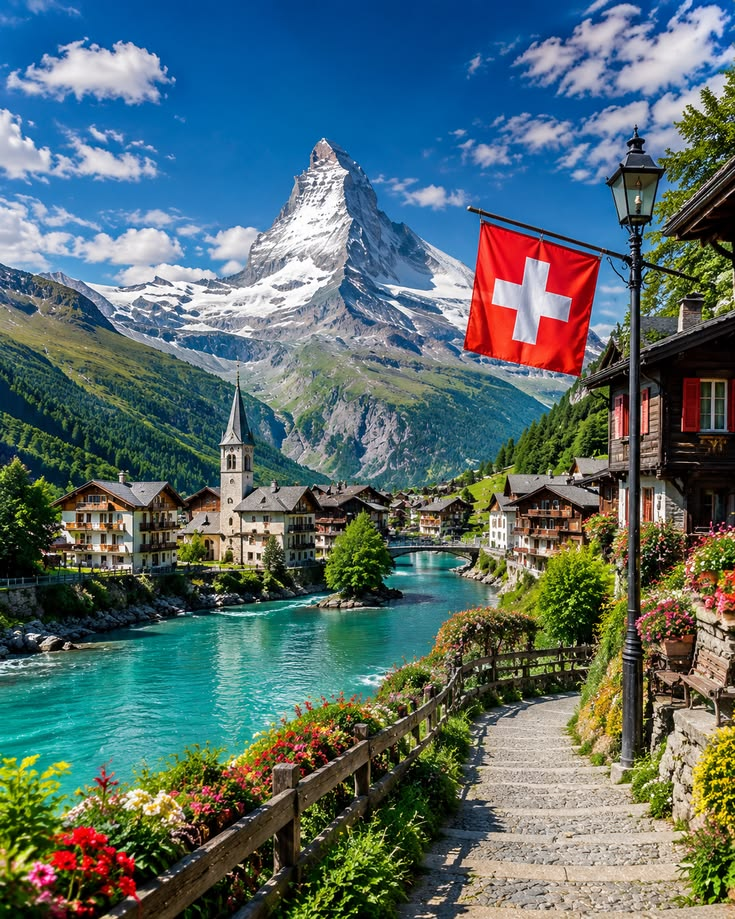
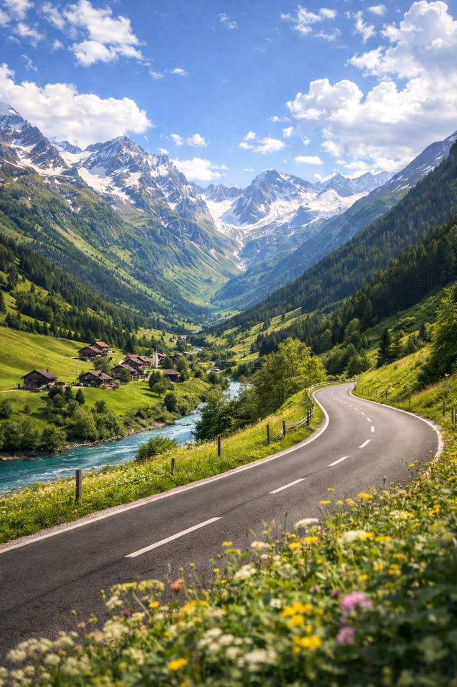

01
Above the Clouds
Experience the dramatic Alpine environment and panoramic mountain views around Mount Titlis.
Seven unforgettable days through Alpine landscapes, elegant cities, crystalline lakes and some of Europe's most iconic mountain scenery.
Switzerland is a country of extraordinary contrasts—snow-covered peaks rising above turquoise lakes, historic old towns meeting modern cities, and scenic rail routes connecting landscapes that feel almost cinematic.
This curated seven-day journey brings together some of Switzerland's most memorable experiences. From Zurich's sophisticated atmosphere to Lucerne's lakeside beauty and Interlaken's dramatic Alpine setting, every stop reveals a different side of the country.
The journey is designed as a balance between sightseeing, mountain experiences, city exploration and time to absorb the surroundings at your own pace.
A carefully selected collection of landscapes, experiences and destinations that capture Switzerland beyond a standard itinerary.
Experience the dramatic Alpine environment and panoramic mountain views around Mount Titlis.
Discover Switzerland's relationship with water through serene lakes and spectacular mountain backdrops.
Wander through elegant city streets, historic districts, lakeside promenades and distinctly Swiss cultural spaces.
The journey between destinations is part of the experience, revealing valleys, lakes and Alpine scenery along the way.


Some destinations are visited. Others completely change your sense of scale.
A flexible premium itinerary designed around the destinations listed in this package. Exact sequencing may vary according to flights, accommodation and local operating conditions.
Begin your journey with your departure from Karachi and arrival arrangements in Switzerland. After transfer and check-in, take time to settle in and enjoy your first introduction to the Swiss atmosphere.
Explore Zurich and experience its blend of historic streets, refined shopping areas, cultural spaces and scenic waterfront surroundings.
Continue toward Lucerne, known for its lake, mountain setting and historic character. Enjoy sightseeing and time to explore the city at a comfortable pace.
Experience one of the journey's signature mountain excursions. Weather and local operating conditions may affect the exact activities available at high altitude.
Travel into the Interlaken region and enjoy its spectacular position between lakes and surrounded by some of Switzerland's most dramatic mountain scenery.
Enjoy the final full day of the journey with scenic travel, lakeside experiences and time to explore according to the confirmed package arrangements.
Complete check-out and departure arrangements for your return journey. Exact departure timing depends on the confirmed airline schedule.
Final package pricing, availability and inclusions should be reconfirmed at the time of booking.
Airfares are indicative estimates only and can change based on travel dates, airline, route, exchange rates and seat availability. Final airfare must be confirmed before booking.
Package services can vary depending on the final departure date and confirmed booking arrangement. Always request the final confirmed inclusion list before payment.
Switzerland offers different experiences year-round. Spring, summer, autumn and winter each provide distinct scenery and weather conditions.
Warm layers, a weather-appropriate jacket, comfortable walking shoes, gloves and suitable accessories are especially useful for Alpine regions.
Passport, visa and entry requirements depend on nationality and current regulations. Confirm official requirements before travel.
The Swiss Franc is Switzerland's official currency. Card acceptance is common, but carrying some local currency can be useful.
Leave space in your itinerary for the journey itself. In Switzerland, the route between two destinations can be just as memorable as the destination waiting at the end.
The displayed land-package price and estimated airfare are shown separately. Your final booking confirmation should clearly state whether airfare has been included.
No. Package and airfare prices can change due to availability, supplier costs, travel dates, exchange rates and other booking conditions. Confirm the final price before making payment.
Yes. Timing and sequence may change because of flights, weather, local operations, accommodation availability or other practical travel requirements.
Carry suitable warm layers, gloves, comfortable footwear and weather-appropriate clothing. Requirements may vary depending on the season and altitude.
Tell us how you would like to travel and begin planning a journey tailored around your preferred dates and room arrangement.